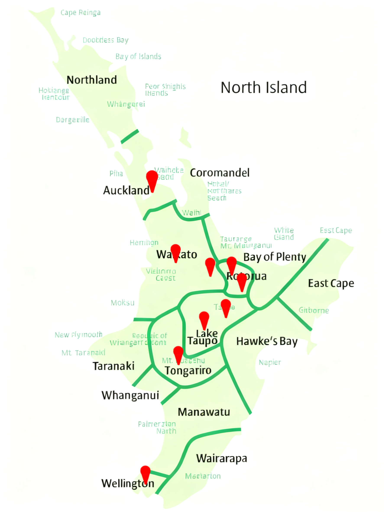
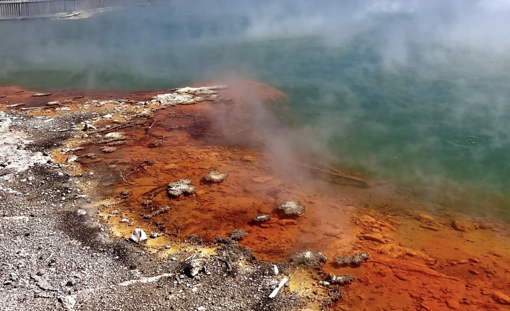
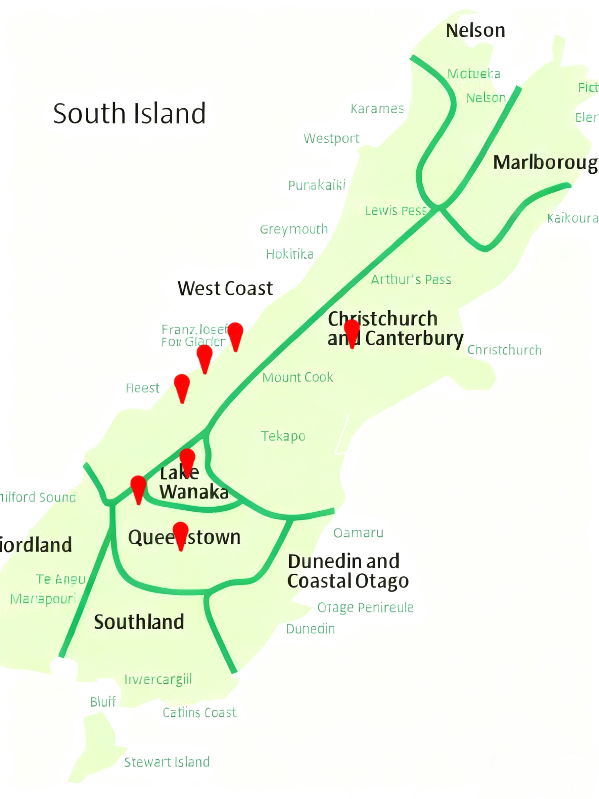
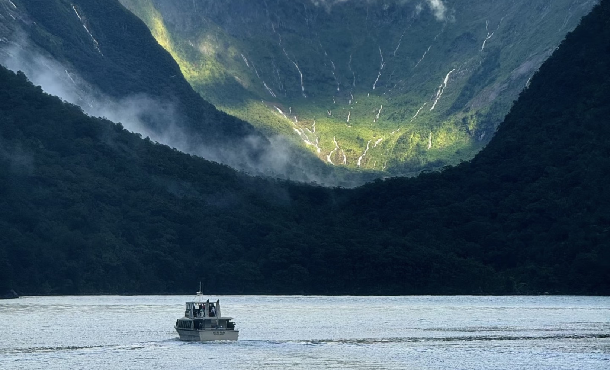
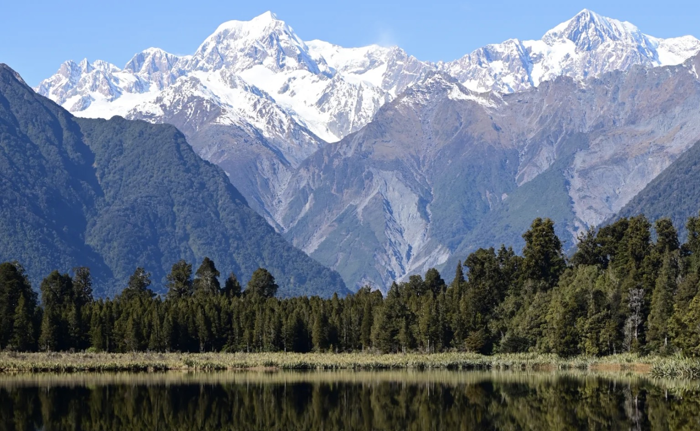

新西兰精选旅行方案
新西兰由北岛和南岛组成，两岛各具特色。北岛以火山地热、毛利文化和现代化都市为特色；南岛则以壮丽的自然景观、冰川峡湾和户外探险闻名。以下为您精心设计的非自驾旅行方案，涵盖大巴、飞机、轮渡等多种交通方式，行程灵活舒适。
北岛深度7日游
乘坐大巴与短途航班，探索火山地热奇观，体验纯正毛利文化，感受现代都市与自然景观的完美融合


北岛深度7日游
主要交通方式
豪华旅游大巴
短途航班（惠灵顿返程可选）
当地接送
这条深度路线从奥克兰出发，一路向南直至首都惠灵顿，全面体验北岛的自然景观与人文风情，适合时间充裕的旅行者。全程采用舒适大巴与短途航班结合的方式，轻松便捷。
行程亮点
- 在怀托摩萤火虫洞乘船观赏万千萤火虫的梦幻景象
- 游览新西兰首都惠灵顿，参观国家博物馆
- 探索汤加里罗国家公园的火山景观，徒步汤加里罗越山步道
- 在东海岸品尝新鲜海鲜，体验小镇风情
- 参观世界上最陡的街道鲍德温街
每日行程概览
D1-2：奥克兰及周边
市内交通 + 短途巴士（约80公里，1.5小时）
市区游览，怀托摩萤火虫洞一日游，宿奥克兰
D3：奥克兰→罗托鲁瓦
豪华大巴（约230公里，3小时）
前往罗托鲁瓦，地热景观与毛利文化体验，宿罗托鲁瓦
D4：罗托鲁瓦→陶波
旅游巴士（约105公里，1.5小时）
陶波湖与胡卡瀑布游览，宿陶波
D5：陶波→汤加里罗
短途巴士（约50公里，1小时）
汤加里罗国家公园徒步，宿国家公园附近
D6：汤加里罗→惠灵顿
长途巴士（约350公里，5小时）
前往惠灵顿，市区游览，宿惠灵顿
D7：惠灵顿
市内交通
国家博物馆，鲍德温街参观，行程结束（可从惠灵顿机场返程）
南岛冰川探险10日游
结合飞机与专业旅游巴士，深入冰川地区，体验冰川徒步与峡湾风光，感受纯净原始的自然之美


南岛冰川探险10日游
主要交通方式
内陆航班（基督城-霍基蒂卡）
专业探险巴士
峡湾游船
这条专业路线专注于南岛壮观的冰川景观，从弗朗茨约瑟夫冰川到福克斯冰川，体验冰爪徒步的独特乐趣，感受大自然的鬼斧神工。行程采用飞机与专业探险巴士结合的方式，既节省时间又能深入偏远景区。
行程亮点
- 弗朗茨约瑟夫冰川向导带领冰爪徒步
- 福克斯冰川探索，参观冰川湖泊
- 在马瑟森湖观赏库克山和塔斯曼山倒影
- 徒步哈斯特通道，穿越温带雨林
- 登顶本洛蒙德山，俯瞰皇后镇全景
每日行程概览
D1-2：基督城
市内交通
抵达基督城，城市游览与适应，宿基督城
D3：基督城→霍基蒂卡
内陆航班（约50分钟）
飞往霍基蒂卡，转乘巴士前往弗朗茨约瑟夫，宿冰川附近
D4-5：弗朗茨约瑟夫冰川
景区接驳车
专业向导带领冰爪徒步，冰川探索，宿弗朗茨约瑟夫
D6-7：福克斯冰川
旅游巴士（约30公里，40分钟）
福克斯冰川徒步，马瑟森湖徒步，宿福克斯
D8：福克斯→瓦纳卡
观光巴士（约270公里，4.5小时）
穿越哈斯特通道，瓦纳卡湖游览，宿瓦纳卡
D9-10：瓦纳卡→皇后镇
旅游巴士（约65公里，1.5小时）
本洛蒙德山徒步，皇后镇周边游览，行程结束（可从皇后镇机场返程）
新西兰全景12日游
乘坐豪华巴士、渡轮与飞机，畅游南北岛，体验新西兰全景风光，轻松舒适的跨岛旅行体验


新西兰全景12日游
主要交通方式
豪华观光巴士
库克海峡渡轮
南岛内部航班（可选）
这条全景路线带您畅游新西兰南北岛，探访最具特色的小镇，深入体验当地风土人情与美食文化。乘坐豪华观光巴士，搭配渡轮跨岛，行程舒适且节奏适中，适合首次到访新西兰的游客。
行程亮点
- 探访霍比特人村庄玛塔玛塔，感受童话世界
- 在箭镇体验淘金乐趣，欣赏历史建筑
- 游览水果小镇克伦威尔，品尝新鲜水果
- 在凯库拉体验观鲸和海豚游泳
- 参观葡萄酒产区马尔堡，品尝世界顶级长相思
每日行程概览
D1-2：奥克兰及周边
旅游巴士（约160公里，2.5小时）
奥克兰市区游览，霍比特人村庄参观，宿奥克兰
D3-4：奥克兰→罗托鲁瓦→陶波
观光巴士（约335公里，5小时）
地热小镇与湖泊小镇体验，宿两地
D5-6：陶波→惠灵顿→皮克顿
巴士（约350公里，5小时） +
渡轮（约3.5小时）
首都游览，库克海峡渡轮，马尔堡产区参观
D7-8：皮克顿→凯库拉→基督城
观光巴士（约240公里，4小时）
海洋小镇生态体验，花园城市游览
D9-10：基督城→瓦纳卡→克伦威尔
可选航班（1小时） 或
巴士（约400公里，5.5小时）
湖泊小镇与水果小镇游览
D11-12：克伦威尔→皇后镇→箭镇
观光巴士（约85公里，2小时）
淘金小镇体验，皇后镇休闲游览，行程结束
旅行贴士
签证信息
- 中国公民需提前申请新西兰旅游签证，建议至少提前1-2个月准备
- 可在线申请电子签证，通常审理周期为15-20个工作日
- 需提供在职证明、资金证明、行程计划等材料
行李准备
- 新西兰气候多变，建议携带防风防雨外套和多层衣物
- 徒步鞋是必备品，尤其是计划参加冰川徒步的旅行者
- 夏季需携带防晒霜（SPF50+）、太阳镜和帽子
货币与消费
- 新西兰货币为新西兰元（NZD），1纽币约合4.5-5人民币（以实时汇率为准）
- 主要城市和旅游区接受信用卡，偏远地区建议备现金
- 餐饮和住宿需支付10-15%的小费（非强制）